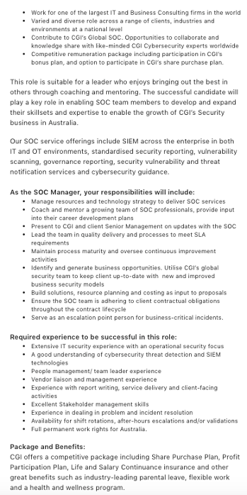
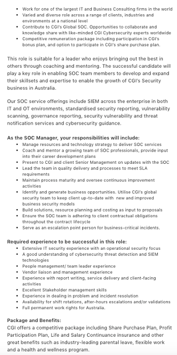

To be perfectly honest I didn't do this course to get a specific role. I'm actually reasonably happy with the current field I'm in at the moment. Risk and Compliance professionals are in reasonably high demand, particularly off the back of the recent Financial Services Royal Commission.
So, the role that I have chosen is more of a hypothetical, enabling me to complete a little research to determine what I need to do to become a Security Operations Centre Manager.
I like dealing with Events and issues, tracking of threat actors and their new tactics. Oh, and it also provides the opportunity to relocate to an exotic location.
The role is leading a team of security professionals in CGI's Security Operations Centre. CGI is one of the largest IT and business consulting service firms in the world. With a global presence they provide guidance through to managed services.
CGI is among the largest IT and business consulting services firms in the world. Operating in hundreds of locations across the globe, CGI delivers end-to-end services and solutions, including strategic IT and business consulting, systems integration, intellectual property, and managed IT and business process services. CGI works with clients through a local relationship model complemented by a global delivery network to help clients achieve their goals, including becoming customer-centric digital enterprises.
It would appear from the description that the role would be involved in pitching the service offerings to prospective companies. This may be a full managed service, hybrid or setting the client up to manage internally.
They also look to provide auditing services, testing, evaluation and certification services to IT security product businesses.
It looks as though the manager needs to be proficient in cybersecurity practises, when not pitching to a prospective clients they would be running the operation to protect their existing clients to protect their data and infrastructure in the following areas:
| Job Requirements | My Skills & experience | Y/N |
|---|---|---|
| Qualifications | ||
| Not Detailed - I would suggest a tertiary qualification in it would be highly regarded | Nothing relevant in this space. | |
| Rights to work in Australia | Australian Citizen | |
| Experience | ||
| Extensive IT security experience | I have limited IT security experience | |
| Cybersecurity threat detection & SIEM technology | I'm across DDos and potential threats against the finance industry however do not have a full understanding of SIEM | |
| People Leadership | Extensive leadership experience, having led teams from 5 to 140. Including leaders of leaders. | |
| Vendor Management | Have managed supplier's, negotiated contracts as the client. Including the governance requirements | |
| Risk Management | Extensive Risk experience across many different functional teams | |
| Skills | ||
| Stakeholder Management | My soft skills have been honed over 30 years in the private industry. While you can always learn in this space. I wouldn't be putting a lot of time into further developing in these at the expense of the technical requirements of the role. | |
| Influencing | ||
| Communication (Written & Verbal) | ||
| Problem Solving | ||
| Critical Thinking | ||
| Continuous Improvement | ||
| NIST | NIL | |
| ISO27001 | NIL | |
| CPS 234 & 231 | I have a working knowledge of the prudential standards | |
 
